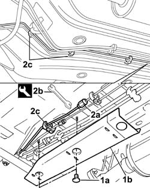
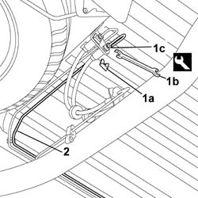

3340B70 RIGID PIPE (one), left or right, from connector to intermediate cable - R.R.
- Path
- Procedures > 33 BRAKES > 3340 A(B.S. ANTI-LOCK BRAKING SYSTEM .) > 3340B abs system pipes > 3340B70 RIGID PIPE (one), left or right, from connector to intermediate cable - R.R.
- Kind
- repair procedure (removal / refitting; the operation number is the code)
- Applies to
- all engines; all production periods
- Interactive page
- https://sloeber94.github.io/elrnDB-fDbl/en/#/2584695
Applies to: all engines; all production periods
 Removing
Removing
 Refitting
RefittingPlace the car on a lift.
Op. 3330C41 BRAKE FLUID RESEVOIR CAP - R.R. FOR VERSIONS WITH ABS.
Draw off brake fluid from the reservoir using a syringe.
Raise the vehicle on the left.
Op. 7055B43 REAR WHEEL ARCH LINER (ONE) LEFT OR RIGHT - R.R..
Op. 1040A10 FUEL TANK - R + R AND DECANT FUEL.
1. Undo retaining plugs (1a) and remove brake pipe protection (1b) on the lower part of the car.
2. Undo connection (2a) securing the rigid pipe to the rear brakes using wrench (2b) and release the pipe from clips (2c) retaining it to the body.
 | Name | Country |
|---|---|---|
2b | Box wrench for brake fittings | 1.856.132.000 |

Applies to: all engines; all production periods
1. Withdraw retaining clip (1a) and use wrench (1b) to undo connector (1c) joining the rigid pipe to the hose.
| Name | Country |
|---|---|---|
1b | Box wrench for brake fittings | 1.856.132.000 |
2. Release the pipe from the retaining clips to the body and remove the pipe.

Applies to: all engines; all production periods
Refitting
RemovingFit a new rigid pipe
Tighten the connector joining the rigid pipe to the intermediate hose using a wrench, then position the retaining clip.
| Name | Country |
|---|---|---|
- | Box wrench for brake fittings | 1.856.132.000 |
Secure the rigid pipe to the body using retaining clips.
Screw the connector onto the rear brake pipes and tighten. Then secure the rigid pipe to the support bracket.
| Name | Country |
|---|---|---|
- | Box wrench for brake fittings | 1.856.132.000 |
 | Fastening | Component | Ø | Value (daNm) |
|---|---|---|---|---|
- | Connector | REAR BRAKE.ABS RIGID PIPE/ CONNECTOR. () | M10 x 1 | 1.4 |
Position the brake pipe protection and secure to the body using retaining plugs.
Op. 1040A10 FUEL TANK - R + R AND DECANT FUEL.
Op. 7055B43 REAR WHEEL ARCH LINER (ONE) LEFT OR RIGHT - R.R..
Op. 0010T64 BRAKE AND/OR CLUTCH FLUID CHECK LEVEL AND TOP UP AS NECESSARY.
Op. 0010T65 HYDRAULIC BRAKE SYSTEM - BLEED AIR.
Op. 0010T66 EXTRAS FOR VERSIONS WITH ABS FOLLOWING OPERATION 0010T65.
Op. 3330C41 BRAKE FLUID RESEVOIR CAP - R.R. FOR VERSIONS WITH ABS.
Remove the car from the lift.
Topics linked from this page (6)
- 0010T64 brake and or clutch fluid check level and top up as necessary
- 0010T65 hydraulic brake system bleed air
- 0010T66 manual gearbox oil check level and top up if necessary
- 1040A10 fuel tank - r + r and decant fuel
- 3330C41 brake fluid resevoir cap - r r for versions with abs systems
- 7055B43 REAR WHEEL ARCH liner (one), left or right - R.R.